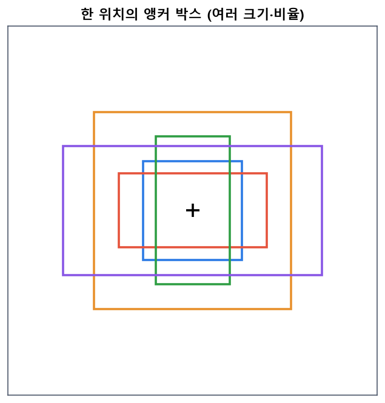
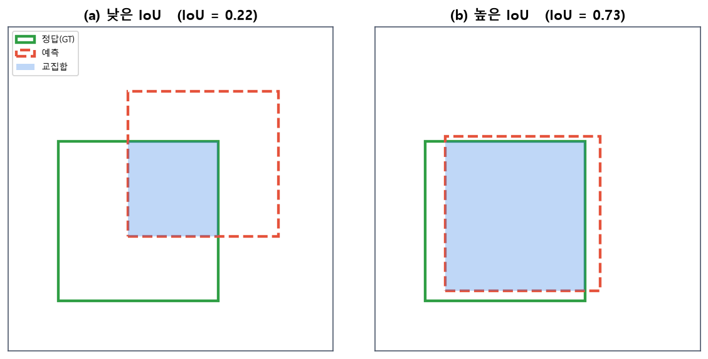
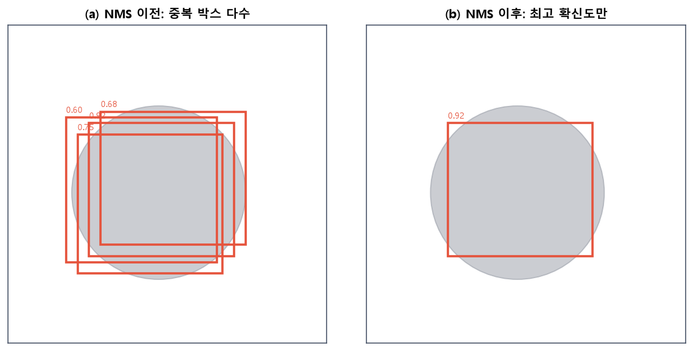
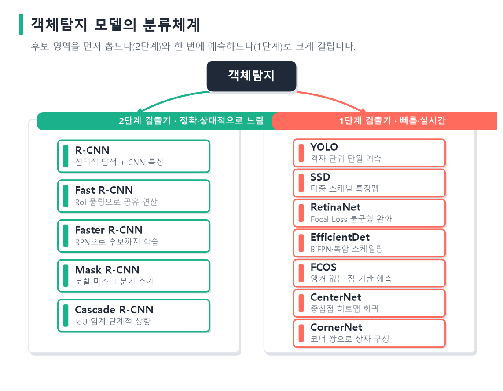
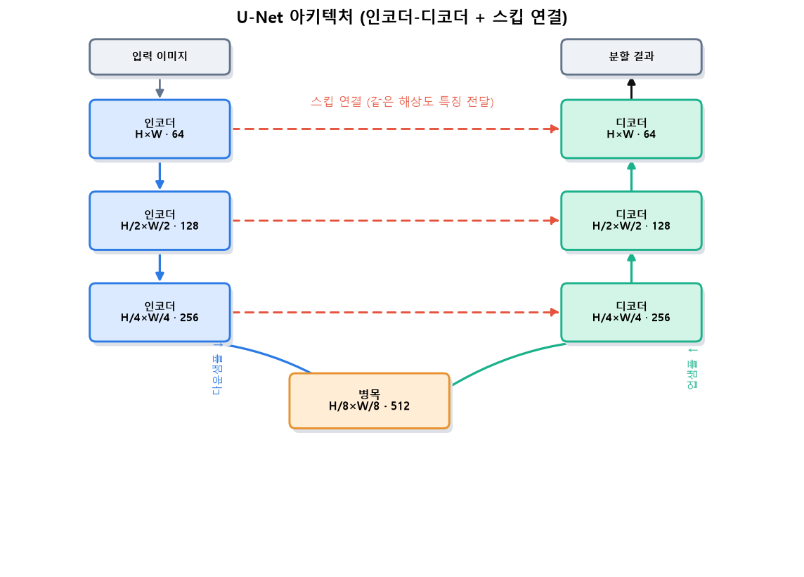

flowchart TB
CV["컴퓨터 비전"] --> C1["이미지 분류<br/>무엇인가?"]
CV --> C2["객체탐지<br/>무엇이 어디에?"]
CV --> C3["이미지 분할<br/>픽셀 단위 영역"]
CV --> C4["자세 추정·추적 등"]
16 객체탐지와 최신 이미지 모델
이 장은 이미지 안에서 “무엇이 어디에 있는가”를 찾는 객체탐지와, 픽셀 단위로 영역을 나누는 이미지 분할을 다룹니다. 먼저 컴퓨터 비전의 개념과 컴퓨터가 시각 정보를 해석하는 방식을 정리하고, 이미지 분류·객체탐지·분할의 공통점과 차이를 비교합니다. 이어서 R-CNN 계열의 2단계 검출기와 YOLO 계열의 1단계 검출기를 구조와 학습 방식까지 상세히 살펴보고, 인코더-디코더 구조의 U-Net을 중심으로 분할 모델을 이해합니다.
16.1 컴퓨터 비전이란
컴퓨터 비전(computer vision)은 컴퓨터가 이미지나 영상 같은 시각 정보를 입력받아 그 내용을 이해하고 해석하도록 하는 인공지능의 한 분야입니다. 사람은 사진 한 장을 보면 즉시 “공원에서 강아지가 뛰고 있다”처럼 장면을 이해하지만, 컴퓨터에게 이미지는 단지 숫자의 격자일 뿐입니다. 컴퓨터 비전의 목표는 이 숫자 격자로부터 의미 있는 정보를 끌어내는 것입니다.
컴퓨터 비전에는 여러 과제가 있습니다. 이미지 전체가 무엇인지 맞히는 이미지 분류(image classification), 물체의 위치까지 찾는 객체탐지(object detection), 픽셀마다 어떤 물체에 속하는지 구분하는 이미지 분할(image segmentation), 그리고 자세 추정·추적·영상 이해 등이 있습니다. 이 장에서는 그중 위치를 다루는 객체탐지와 분할에 집중합니다.
컴퓨터 비전이 어려운 근본 이유는, 사람에게는 쉬운 시각 인식이 컴퓨터에게는 매우 복잡한 문제이기 때문입니다. 같은 물체라도 보는 각도, 조명, 크기, 가려짐, 배경에 따라 픽셀 값은 완전히 달라집니다. 고양이 한 마리를 찍은 두 사진이 픽셀 수준에서는 전혀 닮지 않을 수 있습니다. 그럼에도 “둘 다 고양이”라고 인식하려면, 픽셀의 표면적 차이를 넘어 물체의 본질적 형태를 포착하는 표현을 학습해야 합니다. 컴퓨터 비전의 역사는 이 강인한 표현을 어떻게 얻을 것인가에 대한 탐구의 역사이기도 합니다.
16.2 컴퓨터가 시각 정보를 해석하는 방식
컴퓨터가 이미지를 해석하는 방식은 시대에 따라 크게 변해 왔습니다. 그 흐름을 이해하면 오늘날의 딥러닝 방식이 왜 강력한지 알 수 있습니다.
컴퓨터에게 이미지는 근본적으로 픽셀 값들의 격자, 즉 숫자의 배열입니다. 이 숫자들 자체에는 “고양이”나 “자동차”라는 의미가 담겨 있지 않습니다. 따라서 시각 정보를 해석한다는 것은, 이 저수준의 픽셀 값으로부터 점점 더 추상적이고 의미 있는 표현(representation)을 단계적으로 만들어 내는 과정이라 할 수 있습니다. 픽셀에서 경계선으로, 경계선에서 부분 형태로, 부분에서 물체 전체로 나아가는 계층적 해석이 핵심입니다.
초기에는 사람이 이미지에서 의미 있는 특징을 직접 설계했습니다. 경계선의 방향 분포를 세는 HOG(Histogram of Oriented Gradients)(Dalal & Triggs, 2005)나, 밝기 차이 패턴을 빠르게 계산해 얼굴을 찾는 비올라-존스 검출기(Viola & Jones, 2001)가 대표적입니다. 이런 방식은 사람이 “물체의 어떤 성질이 중요한가”를 미리 정하고, 그 성질을 수치화하는 규칙을 손으로 만들었습니다. 잘 동작하는 경우도 있었지만, 조명·자세·배경이 바뀌면 성능이 크게 떨어졌고 새로운 물체마다 특징을 다시 설계해야 했습니다.
딥러닝은 이 패러다임을 근본적으로 바꾸었습니다. 5장에서 본 합성곱 신경망은 특징을 사람이 설계하는 대신 데이터로부터 학습합니다. 앞쪽 층은 모서리·색 같은 저수준 특징을, 뒤쪽 층은 눈·바퀴 같은 고수준 특징을 스스로 조직합니다. 이 계층적 특징 표현이 조명이나 자세 변화에도 강인하게 작동하면서, 컴퓨터 비전의 성능이 비약적으로 향상되었습니다. 오늘날 객체탐지·분할 모델은 모두 이 CNN이 뽑아낸 특징 위에서 동작합니다. 최근에는 합성곱 대신 어텐션으로 이미지를 해석하는 트랜스포머 계열도 등장했습니다(Dosovitskiy 기타, 2021; Carion 기타, 2020).
16.3 이미지 분류·객체탐지·분할의 관계
세 과제는 모두 “이미지를 이해한다”는 공통 목표를 가지지만, 출력의 형태와 세밀함이 다릅니다.
flowchart LR
IMG["입력 이미지"] --> A["분류<br/>이미지→클래스 1개"]
IMG --> B["객체탐지<br/>물체마다 박스+클래스"]
IMG --> C["의미 분할<br/>픽셀마다 클래스"]
- 이미지 분류(인식): 이미지 전체에 대해 하나의 클래스를 출력합니다. “이 사진은 고양이”처럼 물체가 무엇인지만 답하고, 위치는 다루지 않습니다.
- 객체탐지: 이미지 안의 각 물체에 대해 경계 상자(bounding box)와 클래스를 함께 출력합니다. “왼쪽 위에 고양이, 오른쪽 아래에 강아지”처럼 여러 물체의 종류와 위치를 동시에 찾습니다.
- 이미지 분할: 픽셀 하나하나에 클래스를 부여합니다. 같은 종류의 물체를 하나로 묶는 의미 분할(semantic segmentation)과, 같은 종류라도 개체를 구분하는 인스턴스 분할(instance segmentation)로 나뉩니다.
공통점은 셋 모두 CNN이 추출한 특징 위에서 동작하며, 대규모 라벨 데이터로 학습된다는 점입니다. ImageNet으로 사전학습한 분류 모델을 백본(backbone)으로 삼아 그 위에 과제별 머리를 붙이는 전이학습 구조가 공통적으로 쓰입니다.
차이점은 출력의 공간적 세밀함입니다. 분류는 이미지당 하나의 답, 객체탐지는 물체당 상자와 클래스, 분할은 픽셀당 클래스를 내놓습니다. 세밀할수록 더 정교한 구조와 더 상세한 라벨이 필요합니다. 객체탐지는 분류(무엇인가)와 위치 회귀(어디인가)를 동시에 푸는 문제라는 점에서 분류의 확장으로 볼 수 있습니다.
16.4 객체탐지의 개념과 평가
객체탐지는 두 가지를 동시에 수행합니다. 하나는 물체의 위치를 사각형 상자로 찾는 위치 추정(localization)이고, 다른 하나는 그 상자 안 물체가 무엇인지 맞히는 분류(classification)입니다. 경계 상자는 보통 중심 좌표와 너비·높이 \((x, y, w, h)\), 또는 좌상단·우하단 좌표로 표현합니다.
객체탐지가 분류보다 어려운 이유는 여러 가지입니다. 첫째, 한 이미지에 물체가 몇 개 있는지 미리 알 수 없습니다. 물체가 하나도 없을 수도, 수십 개가 겹쳐 있을 수도 있어 출력의 개수가 가변적입니다. 둘째, 물체의 크기 편차가 큽니다. 멀리 있는 작은 물체와 가까운 큰 물체를 같은 모델이 모두 잡아야 합니다. 셋째, 물체가 서로 가리거나 겹칠 때 구분이 어렵습니다. 이런 난점들 때문에 객체탐지는 오랫동안 어려운 문제였고, 이를 해결하는 다양한 구조가 발전해 왔습니다.
이 문제를 다루는 한 가지 핵심 도구가 앵커 상자(anchor box)입니다. 미리 여러 크기와 가로세로 비율을 가진 기준 상자들을 정해 두고, 모델이 각 기준 상자를 얼마나 이동·확대해야 물체에 맞는지를 예측하게 하는 방식입니다. 상자를 무에서 예측하는 대신 기준으로부터의 보정값을 예측하므로 학습이 안정됩니다. 앵커는 Faster R-CNN, SSD, YOLO 등 많은 검출기의 바탕이 되었습니다.

그림 6.1 앵커 박스. 특징 맵의 한 위치(가운데 +)에 서로 다른 크기와 가로세로 비율을 가진 여러 기준 상자를 미리 놓습니다. 모델은 이 기준 상자를 얼마나 이동·확대·축소해야 실제 물체에 맞는지를 예측합니다. 다양한 크기·형태의 물체에 대응하기 위한 장치입니다.
16.4.1 겹침 정도: IoU
예측한 상자가 정답 상자와 얼마나 잘 겹치는지는 IoU(Intersection over Union)로 잽니다. 두 상자의 교집합 넓이를 합집합 넓이로 나눈 값입니다.
\[ \text{IoU} = \frac{\text{Area}(\text{예측} \cap \text{정답})}{\text{Area}(\text{예측} \cup \text{정답})}. \]
IoU는 0에서 1 사이이며, 1에 가까울수록 정확히 겹친 것입니다. 보통 IoU가 0.5 이상이면 올바른 검출로 간주합니다.

그림 6.2 IoU(Intersection over Union). 정답 상자(초록)와 예측 상자(빨강 점선)의 교집합(파랑 음영) 넓이를 합집합 넓이로 나눈 값입니다. (a)처럼 어긋나면 IoU가 낮고, (b)처럼 잘 겹치면 IoU가 1에 가까워집니다.
16.4.2 중복 제거: NMS
검출기는 한 물체 주위에 비슷한 상자를 여러 개 예측하기 쉽습니다. 이를 정리하는 것이 비최대 억제(Non-Maximum Suppression, NMS)입니다. 같은 물체로 판단되는(IoU가 높은) 상자들 중 확신도가 가장 높은 하나만 남기고 나머지를 제거합니다. NMS는 거의 모든 검출기의 마지막 후처리 단계로 쓰입니다.

그림 6.3 비최대 억제(NMS). (a) 검출기는 한 물체 주위에 겹치는 상자를 여러 개(각각 확신도 표시) 예측합니다. (b) NMS는 서로 많이 겹치는 상자들 중 확신도가 가장 높은 하나만 남기고 나머지를 제거해, 물체마다 하나의 상자만 출력하도록 정리합니다.
16.4.3 종합 성능: mAP
검출 성능은 흔히 mAP(mean Average Precision)로 측정합니다. 각 클래스에 대해 정밀도-재현율 곡선 아래 면적(AP)을 구하고, 이를 모든 클래스에 대해 평균한 값입니다. PASCAL VOC(Everingham 기타, 2010)나 MS COCO(Lin 기타, 2014) 같은 표준 데이터셋과 mAP가 검출 연구의 공통 척도가 되어 왔습니다.
16.5 객체탐지 모델의 두 갈래
딥러닝이 등장하기 전의 검출은 다양한 위치·크기의 창을 이미지 전체에 미끄러뜨리며 각 창을 분류하는 슬라이딩 윈도 방식이 주류였습니다. 그러나 가능한 창의 수가 방대해 매우 느렸고, 손으로 설계한 특징의 한계도 있었습니다. 딥러닝 검출기는 CNN의 강력한 특징과 효율적인 구조로 이 문제를 풀었으며, 접근 방식에 따라 크게 두 갈래로 나뉩니다.
딥러닝 기반 객체탐지는 크게 2단계 검출기(two-stage)와 1단계 검출기(one-stage)로 나뉩니다. 2단계는 먼저 물체가 있을 법한 후보 영역을 뽑고 그 후보를 분류하는 두 단계를 거치며, 정확하지만 느립니다. 1단계는 후보 추출 없이 이미지에서 한 번에 상자와 클래스를 예측해 빠릅니다. 두 방식은 “후보를 먼저 좁힌 뒤 정밀하게 볼 것인가, 아니면 전체를 한 번에 훑을 것인가”라는 전략의 차이로 이해할 수 있습니다.

그림 6.4 객체탐지 모델의 분류체계. 후보 영역을 먼저 뽑은 뒤 분류하는 2단계 검출기(R-CNN 계열)는 정확하지만 상대적으로 느리고, 후보 추출 없이 한 번에 상자와 클래스를 예측하는 1단계 검출기(YOLO·SSD 계열)는 빠르고 실시간에 적합합니다. 각 카드의 부제는 그 모델의 핵심 아이디어를 요약한 것입니다.
16.6 2단계 검출기: R-CNN 계열
16.6.1 R-CNN
R-CNN(Regions with CNN features)은 딥러닝을 객체탐지에 본격 도입한 모델입니다(Girshick 기타, 2014). 동작은 세 단계입니다. 첫째, 선택적 탐색(selective search)(Uijlings 기타, 2013)으로 물체가 있을 법한 후보 영역을 약 2,000개 뽑습니다. 둘째, 각 후보를 일정 크기로 잘라 CNN에 넣어 특징을 추출합니다. 셋째, 그 특징으로 SVM 분류기가 클래스를 판정하고, 별도의 회귀기가 상자 위치를 보정합니다.
flowchart LR
I["입력 이미지"] --> SS["선택적 탐색<br/>후보 영역 ~2000개"]
SS --> CROP["각 후보를 잘라<br/>CNN에 개별 입력"]
CROP --> F["특징 추출"]
F --> CLS["SVM 분류 + 상자 회귀"]
학습 관점에서 R-CNN은 ImageNet으로 사전학습한 CNN을 검출 데이터로 미세조정하는, 전이학습의 전형을 보여 주었습니다. 후보 영역이 정답 상자와 IoU가 높으면 양성(해당 클래스), 낮으면 음성(배경)으로 라벨을 매겨 CNN을 미세조정하고, 그 특징으로 클래스별 SVM과 상자 회귀기를 학습했습니다. 검출에 딥러닝 특징을 접목한 이 방식이 이후 모든 딥러닝 검출기의 출발점이 되었습니다.
그러나 R-CNN은 당시로서는 획기적인 정확도를 보였지만, 심각한 단점이 있었습니다. 후보 2,000개마다 CNN을 따로따로 실행하므로 매우 느리고, 특징 추출·SVM 분류·상자 회귀가 분리되어 학습이 여러 단계로 복잡했습니다. 게다가 각 후보의 특징을 디스크에 저장해야 해 저장 공간도 많이 들었습니다. 한 이미지를 처리하는 데 수십 초가 걸려 실용성이 떨어졌습니다. 이후 Fast R-CNN과 Faster R-CNN의 발전은 이 비효율을 하나씩 제거해 가는 과정으로 이해할 수 있습니다.
16.6.2 Fast R-CNN
Fast R-CNN은 이 비효율을 해결했습니다(Girshick, 2015). 핵심은 후보마다 CNN을 돌리는 대신, 이미지 전체에 CNN을 한 번만 적용해 특징 맵을 만든 뒤, 각 후보 영역에 해당하는 부분을 그 특징 맵에서 잘라 쓰는 것입니다. 이때 서로 다른 크기의 후보를 고정 크기 특징으로 바꾸는 RoI 풀링(Region of Interest pooling)을 도입했습니다. RoI 풀링은 임의 크기의 후보 영역을 정해진 격자로 나눠 각 칸을 풀링함으로써, 크기가 제각각인 후보들을 뒤따르는 완전연결층이 받을 수 있는 동일한 크기의 특징으로 통일합니다. 이는 공간 피라미드 풀링의 아이디어를 이은 것입니다(He 기타, 2015). 또한 분류와 상자 회귀를 하나의 신경망에서 함께 학습해, 학습을 단일 과정으로 통합했습니다. 그 결과 속도와 정확도가 모두 크게 향상되었습니다. 그러나 후보 영역을 뽑는 선택적 탐색은 여전히 신경망 밖의 느린 단계로 남아 병목이 되었습니다.
16.6.3 Faster R-CNN
Faster R-CNN은 이 마지막 병목마저 신경망 안으로 끌어들였습니다(Ren 기타, 2015). 후보 영역을 뽑는 별도 알고리즘 대신, 특징 맵 위에서 물체 후보를 직접 예측하는 영역 제안 네트워크(Region Proposal Network, RPN)를 도입했습니다. RPN은 특징 맵의 각 위치에 앵커(anchor)라 부르는 여러 크기·비율의 기준 상자를 두고, 각 앵커에 물체가 있을 확률과 상자 보정값을 예측합니다.
flowchart LR
I["입력 이미지"] --> B["백본 CNN<br/>특징 맵"]
B --> RPN["RPN<br/>앵커 기반 후보 제안"]
B --> ROI["RoI 풀링"]
RPN --> ROI
ROI --> HEAD["분류 + 상자 회귀"]
RPN과 검출 머리가 특징 맵을 공유하므로, 후보 제안부터 최종 검출까지 하나의 신경망으로 끝에서 끝까지(end-to-end) 학습됩니다. 선택적 탐색이라는 느린 외부 단계가 사라지고, 후보 제안이 GPU에서 신경망으로 수행되면서 속도가 크게 빨라졌습니다. 이로써 Faster R-CNN은 준실시간에 가까운 속도와 높은 정확도를 얻어, 이후 2단계 검출기의 표준 틀이 되었습니다.
여러 크기의 물체를 잘 다루기 위해 서로 다른 해상도의 특징을 결합하는 특징 피라미드 네트워크(FPN)가 함께 쓰이기도 합니다(Lin 기타, 2017). FPN은 깊은 층의 의미가 풍부한 특징과 얕은 층의 해상도가 높은 특징을 위에서 아래로 결합해, 작은 물체와 큰 물체를 모두 잘 검출하도록 돕습니다. 이 다중 스케일 특징 결합은 이후 대부분의 검출기에 표준적으로 채택되었습니다.
16.6.4 Mask R-CNN
Mask R-CNN은 Faster R-CNN에 분할 머리를 하나 더 붙여, 검출과 동시에 각 물체의 픽셀 단위 마스크까지 예측합니다(He 기타, 2017). 즉 같은 종류라도 개체를 구분하는 인스턴스 분할을 수행합니다. 기존 검출 머리(분류·상자 회귀)와 나란히, 각 후보 영역에 대해 이진 마스크를 출력하는 작은 완전 합성곱 가지를 추가한 구조입니다. 이 과정에서 RoI 풀링이 좌표를 반올림하며 생기는 위치 어긋남을 없앤 RoIAlign을 도입해 마스크의 정밀도를 크게 높였습니다. RoIAlign은 반올림 대신 이중선형 보간으로 특징을 정확히 정렬해, 픽셀 단위 예측에서 중요한 미세한 위치 정확도를 확보합니다. Mask R-CNN은 검출·분할·자세 추정 등 여러 과제로 확장 가능한 유연한 구조로, 오늘날에도 인스턴스 분할의 대표 모델로 널리 활용됩니다.
16.6.5 Cascade R-CNN
Cascade R-CNN은 검출기를 여러 단계로 이어 붙여 품질을 높입니다(Cai & Vasconcelos, 2018). 하나의 IoU 기준만 쓰면, 기준을 낮게 잡으면 부정확한 상자가 늘고 높게 잡으면 학습 예제가 부족해지는 딜레마가 있습니다. Cascade R-CNN은 낮은 IoU 기준으로 학습한 검출기의 출력을, 점점 높은 IoU 기준으로 학습한 다음 검출기가 다시 다듬는 방식으로 이 딜레마를 풉니다. 단계를 거칠수록 상자가 정답에 더 정밀하게 맞춰져, 특히 높은 정확도가 요구되는 상황에서 성능이 향상됩니다.
16.7 1단계 검출기
2단계 검출기는 정확하지만 후보 제안 단계 때문에 실시간 처리에 한계가 있었습니다. 1단계 검출기는 후보 제안 없이 이미지에서 한 번의 순전파로 상자와 클래스를 직접 예측해 속도를 크게 높였습니다.
16.7.1 YOLO
YOLO(You Only Look Once)는 1단계 검출의 대표 모델입니다(Redmon 기타, 2016). 이름 그대로 이미지를 한 번만 보고 모든 물체를 찾습니다. 동작 원리는 이미지를 \(S\times S\) 격자로 나누고, 각 격자 칸이 그 칸을 중심으로 하는 물체의 상자·확신도·클래스 확률을 직접 예측하는 것입니다.
flowchart LR
I["입력 이미지"] --> G["S×S 격자로 분할"]
G --> CNN["단일 CNN 순전파"]
CNN --> P["각 칸마다<br/>상자 B개 + 확신도 + 클래스 확률"]
P --> NMS["NMS로 중복 제거"]
NMS --> OUT["최종 검출"]
각 격자 칸은 \(B\)개의 상자를 예측하며, 하나의 상자는 위치 \((x,y,w,h)\)와 물체 존재 확신도로 이루어집니다. 여기에 칸별 클래스 확률을 곱해 최종 점수를 냅니다. 클래스가 \(C\)개일 때 전체 출력은 \(S\times S\times(B\times 5 + C)\) 크기의 하나의 텐서로 표현됩니다. 여기서 \(5\)는 상자 좌표 네 개와 확신도 하나를 뜻합니다. 이 텐서를 한 번의 순전파로 얻으므로 매우 빠릅니다.
YOLO의 학습은 이 출력 텐서 전체에 대한 하나의 손실로 이루어집니다. 상자 위치 오차, 확신도 오차, 클래스 오차를 가중합한 손실을 최소화하며, 물체가 있는 칸과 없는 칸의 불균형을 가중치로 조절합니다. 검출을 여러 단계가 아니라 하나의 회귀 문제로 통합한 이 발상이 YOLO의 속도와 단순함의 원천입니다. YOLO는 전체 이미지를 한꺼번에 보므로 배경을 물체로 오인하는 실수가 적다는 장점도 있습니다. 다만 초기 버전은 한 칸이 예측하는 상자 수가 제한되어, 작은 물체가 밀집한 경우에 약했습니다.
YOLO는 이후 여러 세대로 발전했습니다. 앵커 상자와 배치 정규화를 도입하고 더 많은 클래스를 다룬 YOLO9000(YOLOv2)(Redmon & Farhadi, 2017), 다중 스케일 예측으로 작은 물체 검출을 개선한 YOLOv3(Redmon & Farhadi, 2018), 다양한 학습 기법을 결합해 속도와 정확도를 함께 높인 YOLOv4(Bochkovskiy 기타, 2020) 등으로 이어지며 실시간 검출의 대표 계열이 되었습니다.
16.7.2 SSD
SSD(Single Shot MultiBox Detector)도 1단계 검출기로, YOLO와 비슷한 시기에 등장했습니다(Liu 기타, 2016). SSD의 특징은 여러 해상도의 특징 맵에서 동시에 검출을 수행한다는 점입니다. 큰 특징 맵은 세밀해 작은 물체를, 작은 특징 맵은 넓은 문맥을 보아 큰 물체를 담당하게 하여, 다양한 크기의 물체를 한 번의 순전파로 잘 잡아냅니다. 각 특징 맵 위치에 여러 비율의 기본 상자(default box)를 두어 예측합니다. 이렇게 여러 스케일에서 검출하는 발상은 초기 YOLO가 약했던 다중 크기 문제를 완화했고, 이후 검출기들이 다중 스케일 특징을 활용하는 흐름으로 이어졌습니다.
16.7.3 RetinaNet과 초점 손실
1단계 검출기는 빠르지만, 오랫동안 정확도에서 2단계에 뒤졌습니다. RetinaNet은 그 원인이 클래스 불균형에 있음을 밝혔습니다(Lin 기타, 2017). 이미지 대부분이 배경이라, 쉬운 배경 예제가 손실을 지배해 어려운 물체 학습을 방해한 것입니다. 이를 해결하려고 잘 맞힌 쉬운 예제의 손실을 줄이는 초점 손실(focal loss)을 제안했습니다.
\[ \text{FL}(p_t) = -(1-p_t)^{\gamma}\,\log(p_t). \]
여기서 \(p_t\)는 정답 클래스에 대한 예측 확률이고 \(\gamma\)는 조절 계수입니다. \(p_t\)가 1에 가까운(이미 잘 맞힌) 예제는 \((1-p_t)^\gamma\)가 작아져 손실 기여가 줄고, 어려운 예제에 학습이 집중됩니다. 예컨대 \(\gamma=2\)이고 어떤 배경을 0.9의 확률로 잘 맞혔다면, 그 손실은 일반 교차 엔트로피의 100분의 1 수준으로 줄어듭니다. 이렇게 쉬운 다수 예제의 영향을 억눌러, 소수의 어려운 물체 예제가 학습을 이끌게 합니다. 초점 손실 덕분에 RetinaNet은 1단계의 속도를 유지하면서 2단계에 필적하는 정확도를 얻어, 1단계 검출기가 정확도에서도 경쟁력을 갖추는 계기가 되었습니다.
16.7.4 EfficientDet
EfficientDet은 효율적인 백본 EfficientNet 위에, 여러 해상도 특징을 가중 결합하는 BiFPN과 복합 스케일링을 결합해 정확도와 효율을 함께 높인 검출기입니다(Tan 기타, 2020). 제한된 연산 자원에서 높은 성능을 내도록 설계되어, 자원 대비 성능이 우수합니다.
16.7.5 앵커 없는 검출기: FCOS·CenterNet·CornerNet
앞의 많은 검출기는 미리 정의한 앵커 상자에 의존했는데, 앵커의 크기·비율을 사람이 조정해야 하는 부담이 있었습니다. 앵커 프리(anchor-free) 검출기는 이 앵커를 없앱니다.
- FCOS는 특징 맵의 각 픽셀에서 그 픽셀이 물체 안에 있는지와 상자 네 변까지의 거리를 직접 예측합니다(Tian 기타, 2019). 앵커 없이 완전 합성곱만으로 검출을 수행해 구조가 단순합니다.
- CenterNet(Objects as Points)은 물체를 중심점 하나로 표현합니다(Zhou 기타, 2019). 히트맵으로 물체 중심을 찾고, 그 위치에서 크기와 오프셋을 회귀합니다. NMS조차 거의 필요 없을 만큼 간결합니다.
- CornerNet은 물체를 좌상단·우하단 두 모서리 점의 쌍으로 검출합니다(Law & Deng, 2018). 키포인트 검출 방식을 객체탐지에 적용한 초기 앵커 프리 모델입니다.
이런 앵커 프리 접근은 앵커의 크기·비율·개수 같은 하이퍼파라미터를 사람이 조정할 필요를 없애, 구조를 단순화하고 다양한 데이터에 더 잘 적응하게 만드는 흐름을 이끌었습니다. 물체를 상자가 아니라 점이나 키포인트로 표현하는 이 발상은, 검출을 바라보는 새로운 관점을 열었다는 점에서도 의미가 있습니다.
16.7.6 2단계와 1단계의 비교
두 갈래의 특징을 정리하면 다음과 같습니다.
| 구분 | 2단계 검출기 | 1단계 검출기 |
|---|---|---|
| 절차 | 후보 제안 → 분류 | 한 번에 직접 예측 |
| 대표 | Faster/Mask R-CNN | YOLO, SSD, RetinaNet |
| 속도 | 상대적으로 느림 | 빠름(실시간) |
| 정확도 | 전통적으로 높음 | 초점 손실 등으로 근접 |
| 활용 | 정밀도 중시 과제 | 실시간·모바일 |
실무에서는 정확도가 중요하면 2단계를, 속도가 중요하면 1단계를 택하되, 최근에는 1단계의 정확도가 크게 올라 경계가 흐려지고 있습니다.
핵심. 객체탐지는 위치(박스) + 분류를 동시에 푸는 문제이며, IoU·NMS·mAP로 평가합니다. 2단계 검출기(R-CNN 계열)는 후보를 먼저 뽑아 정밀하게, 1단계 검출기(YOLO·SSD·RetinaNet)는 한 번에 예측해 빠르게 처리합니다.
16.8 이미지 분할과 인코더-디코더
이미지 분할은 픽셀마다 클래스를 부여하는 과제입니다. 분류가 이미지 하나에 라벨 하나를 주는 것과 달리, 분할은 입력과 같은 크기의 라벨 지도를 출력해야 합니다. 이를 위해서는 특징을 추출해 압축한 뒤 다시 원래 해상도로 복원하는 구조가 필요합니다.
일반적인 분류 CNN은 풀링을 거치며 해상도를 계속 낮추므로, 마지막에는 공간 정보가 거의 사라진 작은 특징만 남습니다. 이는 “무엇인가”를 판단하기엔 충분하지만 “어디인가”를 픽셀 단위로 답하기엔 부족합니다. 따라서 분할 모델은 낮아진 해상도를 다시 키우는 업샘플링(upsampling) 과정을 두어야 합니다. 업샘플링에는 단순히 값을 키우는 보간법이나, 학습되는 전치 합성곱(transposed convolution)이 쓰입니다. 전치 합성곱은 합성곱의 역방향으로 작은 특징 맵을 큰 특징 맵으로 확장하는 학습 가능한 연산입니다.
16.8.1 인코더-디코더 아키텍처
분할의 표준 틀은 인코더-디코더(encoder-decoder) 구조입니다. 인코더는 합성곱과 풀링으로 이미지를 점점 작은 특징 맵으로 압축하며 “무엇이 있는가”라는 의미 정보를 추출합니다. 디코더는 업샘플링으로 특징 맵을 점점 키워 원래 해상도의 픽셀별 예측을 복원하며 “어디에 있는가”라는 위치 정보를 되살립니다. 이 구조는 4장에서 본 시퀀스 모델의 인코더-디코더와 목적은 다르지만, “압축 후 복원”이라는 발상을 공유합니다.
flowchart LR
I["입력 이미지"] --> E["인코더<br/>다운샘플링·의미 추출"]
E --> Z["압축된 특징"]
Z --> D["디코더<br/>업샘플링·해상도 복원"]
D --> O["픽셀별 클래스 지도"]
분할은 라벨의 세밀함에 따라 두 종류로 나뉩니다. 의미 분할은 같은 종류의 물체를 하나로 묶어 픽셀마다 클래스만 구분합니다. 예를 들어 화면의 모든 사람 픽셀을 “사람”으로 칠하되 개인은 구분하지 않습니다. 인스턴스 분할은 같은 종류라도 개체를 따로 구분해, 사람 A와 사람 B를 다른 영역으로 나눕니다. 앞서 본 Mask R-CNN이 인스턴스 분할의 대표라면, 지금 볼 인코더-디코더 계열은 주로 의미 분할에 쓰입니다.
이 발상을 처음 픽셀 단위 분할에 적용한 것이 완전 합성곱 네트워크(FCN)입니다(Long 기타, 2015). FCN은 분류 CNN의 완전연결층을 합성곱으로 바꿔, 임의 크기 입력에 대해 픽셀별 예측을 내놓을 수 있게 했습니다. 인코더의 풀링 인덱스를 기억해 디코더에서 되살리는 SegNet(Badrinarayanan 기타, 2017), 확장 합성곱으로 넓은 문맥을 보는 DeepLab(Chen 기타, 2018) 등이 이 계보를 이었습니다.
16.8.2 U-Net
U-Net은 인코더-디코더 구조에 스킵 연결(skip connection)을 더한 분할 모델로, 특히 의료 영상에서 널리 쓰입니다(Ronneberger 기타, 2015). 이름은 인코더와 디코더가 대칭을 이루어 알파벳 U자 모양을 그리는 데서 왔습니다.

그림 6.5 U-Net 아키텍처. 왼쪽 인코더는 다운샘플링으로 공간 크기를 줄이며 의미 정보를 추출하고(H×W → H/8×W/8), 오른쪽 디코더는 업샘플링으로 원래 해상도를 복원합니다. 핵심은 붉은 스킵 연결로, 같은 해상도의 인코더 특징을 디코더에 직접 이어 붙여 다운샘플링에서 잃은 세밀한 위치 정보를 되살립니다. 인코더-디코더가 대칭을 이루어 알파벳 U자 모양이 됩니다.
U-Net의 핵심은 스킵 연결입니다. 인코더에서 다운샘플링하며 잃어버리는 세밀한 위치 정보를, 같은 해상도의 인코더 특징을 디코더에 직접 이어 붙여 되살립니다. 디코더는 이렇게 “의미 정보(깊은 층)”와 “세밀한 경계 정보(얕은 층)”를 함께 활용해 경계가 정확한 분할을 만듭니다. 스킵 연결이 없으면 디코더는 압축 과정에서 사라진 미세한 경계를 복원하기 어려워 분할 경계가 뭉개집니다.
이 스킵 연결 덕분에 U-Net은 적은 학습 데이터로도 정밀한 분할을 해내어, 데이터가 귀한 의료 영상 분야에서 표준처럼 자리 잡았습니다. 세포·장기·병변의 경계를 픽셀 단위로 정확히 나누어야 하는 의료 영상에서 U-Net과 그 변형들은 지금도 널리 쓰이며, 위성 영상 분석이나 산업 결함 검사 등 정밀한 영역 구분이 필요한 여러 분야로 확장되었습니다. 스킵 연결로 저수준·고수준 특징을 결합한다는 아이디어는 앞서 본 FPN과도 통하는, 현대 시각 모델의 핵심 설계 원리 중 하나입니다.
16.9 최신 동향: 트랜스포머 기반 검출
최근에는 4장에서 배운 트랜스포머가 객체탐지에도 도입되었습니다. 앞서 본 검출기들은 앵커 설계, NMS, 후보 제안 같은 사람이 정한 요소를 많이 포함했는데, 이런 부분이 성능을 좌우하면서도 조정이 까다로웠습니다. DETR(Detection Transformer)는 이런 수작업 요소를 없애고, 검출을 집합 예측(set prediction) 문제로 다룹니다(Carion 기타, 2020). CNN 백본이 뽑은 특징에 트랜스포머 인코더-디코더를 적용하고, 학습된 질의(object query)들이 각각 하나의 물체를 직접 예측합니다. 어텐션이 이미지 전체의 관계를 보므로, 물체 사이의 문맥까지 고려한 예측이 가능합니다. 예측과 정답을 일대일로 짝짓는 이분 매칭 손실로 학습하므로, 한 물체에 여러 상자가 나오지 않아 중복을 제거하는 NMS가 필요 없습니다. DETR는 복잡했던 검출 파이프라인을 하나의 신경망으로 단순화했고, 초기의 느린 수렴 문제를 개선한 여러 변형으로 활발히 발전하고 있습니다.
지금까지의 흐름을 되짚으면 하나의 방향이 보입니다. 검출 파이프라인에서 사람이 손으로 설계하던 부분—특징, 후보 제안, 앵커, 중복 제거—이 하나씩 학습 가능한 신경망 안으로 흡수되며 점점 단순하고 강력해져 왔습니다. 이처럼 객체탐지는 손으로 설계한 특징에서 CNN 기반 2단계·1단계 검출기로, 그리고 앵커 프리와 트랜스포머 기반 방식으로 꾸준히 발전해 왔습니다. 그 바탕에는 언제나 CNN이 학습한 강력한 시각 특징이 있으며, 검출·분할은 그 특징을 어떻게 활용해 “무엇이 어디에 있는가”를 답하느냐의 문제였습니다. 이 장에서 다룬 구조들은 자율주행·의료 영상·산업 검사·영상 분석 등 시각 정보를 다루는 거의 모든 응용의 토대가 됩니다.
참고문헌
V. Badrinarayanan, A. Kendall, & R. Cipolla. 2017. “SegNet: A deep convolutional encoder-decoder architecture for image segmentation”. IEEE Transactions on Pattern Analysis and Machine Intelligence, vol 39, pp. 2481–2495.
A. Bochkovskiy, C.-Y. Wang, & H.-Y. M. Liao. 2020. “YOLOv4: Optimal speed and accuracy of object detection”. arXiv preprint arXiv:2004.10934.
Z. Cai & N. Vasconcelos. 2018. “Cascade R-CNN: Delving into high quality object detection”. IEEE Conference on Computer Vision and Pattern Recognition (CVPR), pp. 6154–6162.
N. Carion, F. Massa, G. Synnaeve, N. Usunier, A. Kirillov, & S. Zagoruyko. 2020. “End-to-end object detection with transformers”. European Conference on Computer Vision (ECCV), pp. 213–229.
L.-C. Chen, G. Papandreou, I. Kokkinos, K. Murphy, & A. L. Yuille. 2018. “DeepLab: Semantic image segmentation with deep convolutional nets, atrous convolution, and fully connected CRFs”. IEEE Transactions on Pattern Analysis and Machine Intelligence, vol 40, pp. 834–848.
N. Dalal & B. Triggs. 2005. “Histograms of oriented gradients for human detection”. IEEE Conference on Computer Vision and Pattern Recognition (CVPR), pp. 886–893.
A. Dosovitskiy, L. Beyer, A. Kolesnikov, D. Weissenborn, X. Zhai, & others. 2021. “An image is worth 16x16 words: Transformers for image recognition at scale”. International Conference on Learning Representations (ICLR).
M. Everingham, L. Van Gool, C. K. I. Williams, J. Winn, & A. Zisserman. 2010. “The PASCAL Visual Object Classes (VOC) challenge”. International Journal of Computer Vision, vol 88, pp. 303–338.
R. Girshick. 2015. “Fast R-CNN”. IEEE International Conference on Computer Vision (ICCV), pp. 1440–1448.
R. Girshick, J. Donahue, T. Darrell, & J. Malik. 2014. “Rich feature hierarchies for accurate object detection and semantic segmentation”. IEEE Conference on Computer Vision and Pattern Recognition (CVPR), pp. 580–587.
K. He, G. Gkioxari, P. Dollar, & R. Girshick. 2017. “Mask R-CNN”. IEEE International Conference on Computer Vision (ICCV), pp. 2961–2969.
K. He, X. Zhang, S. Ren, & J. Sun. 2015. “Spatial pyramid pooling in deep convolutional networks for visual recognition”. IEEE Transactions on Pattern Analysis and Machine Intelligence, vol 37, pp. 1904–1916.
H. Law & J. Deng. 2018. “CornerNet: Detecting objects as paired keypoints”. European Conference on Computer Vision (ECCV), pp. 734–750.
T.-Y. Lin, P. Dollar, R. Girshick, K. He, B. Hariharan, & S. Belongie. 2017. “Feature pyramid networks for object detection”. IEEE Conference on Computer Vision and Pattern Recognition (CVPR), pp. 2117–2125.
T.-Y. Lin, P. Goyal, R. Girshick, K. He, & P. Dollar. 2017. “Focal loss for dense object detection”. IEEE International Conference on Computer Vision (ICCV), pp. 2980–2988.
T.-Y. Lin, M. Maire, S. Belongie, J. Hays, P. Perona, D. Ramanan, P. Dollar, & C. L. Zitnick. 2014. “Microsoft COCO: Common objects in context”. European Conference on Computer Vision (ECCV), pp. 740–755.
W. Liu, D. Anguelov, D. Erhan, C. Szegedy, S. Reed, C.-Y. Fu, & A. C. Berg. 2016. “SSD: Single shot multibox detector”. European Conference on Computer Vision (ECCV), pp. 21–37.
J. Long, E. Shelhamer, & T. Darrell. 2015. “Fully convolutional networks for semantic segmentation”. IEEE Conference on Computer Vision and Pattern Recognition (CVPR), pp. 3431–3440.
J. Redmon, S. Divvala, R. Girshick, & A. Farhadi. 2016. “You only look once: Unified, real-time object detection”. IEEE Conference on Computer Vision and Pattern Recognition (CVPR), pp. 779–788.
J. Redmon & A. Farhadi. 2017. “YOLO9000: Better, faster, stronger”. IEEE Conference on Computer Vision and Pattern Recognition (CVPR), pp. 7263–7271.
J. Redmon & A. Farhadi. 2018. “YOLOv3: An incremental improvement”. arXiv preprint arXiv:1804.02767.
S. Ren, K. He, R. Girshick, & J. Sun. 2015. “Faster R-CNN: Towards real-time object detection with region proposal networks”. Advances in Neural Information Processing Systems (NeurIPS).
O. Ronneberger, P. Fischer, & T. Brox. 2015. “U-Net: Convolutional networks for biomedical image segmentation”. Medical Image Computing and Computer-Assisted Intervention (MICCAI), pp. 234–241.
M. Tan, R. Pang, & Q. V. Le. 2020. “EfficientDet: Scalable and efficient object detection”. IEEE Conference on Computer Vision and Pattern Recognition (CVPR), pp. 10781–10790.
Z. Tian, C. Shen, H. Chen, & T. He. 2019. “FCOS: Fully convolutional one-stage object detection”. IEEE International Conference on Computer Vision (ICCV), pp. 9627–9636.
J. R. R. Uijlings, K. E. A. van de Sande, T. Gevers, & A. W. M. Smeulders. 2013. “Selective search for object recognition”. International Journal of Computer Vision, vol 104, pp. 154–171.
P. Viola & M. Jones. 2001. “Rapid object detection using a boosted cascade of simple features”. IEEE Conference on Computer Vision and Pattern Recognition (CVPR).
X. Zhou, D. Wang, & P. Krahenbuhl. 2019. “Objects as points”. arXiv preprint arXiv:1904.07850.